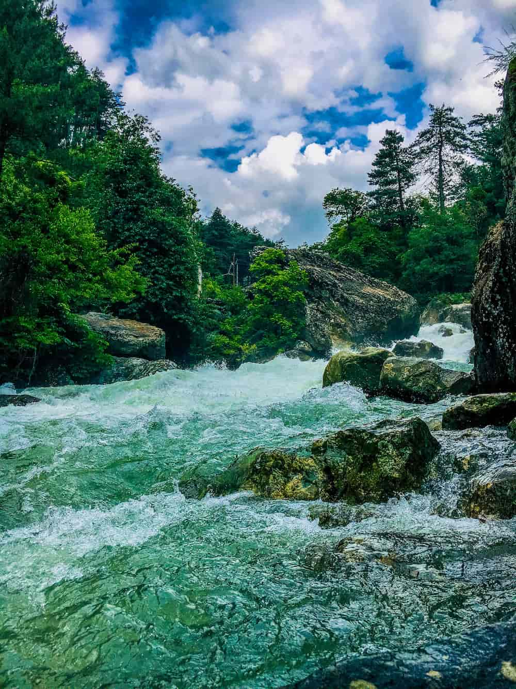
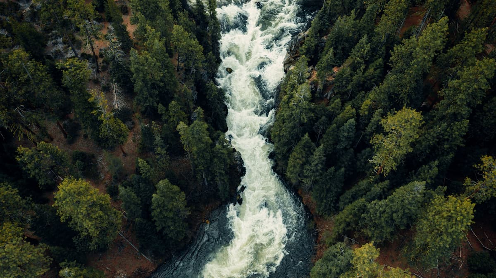
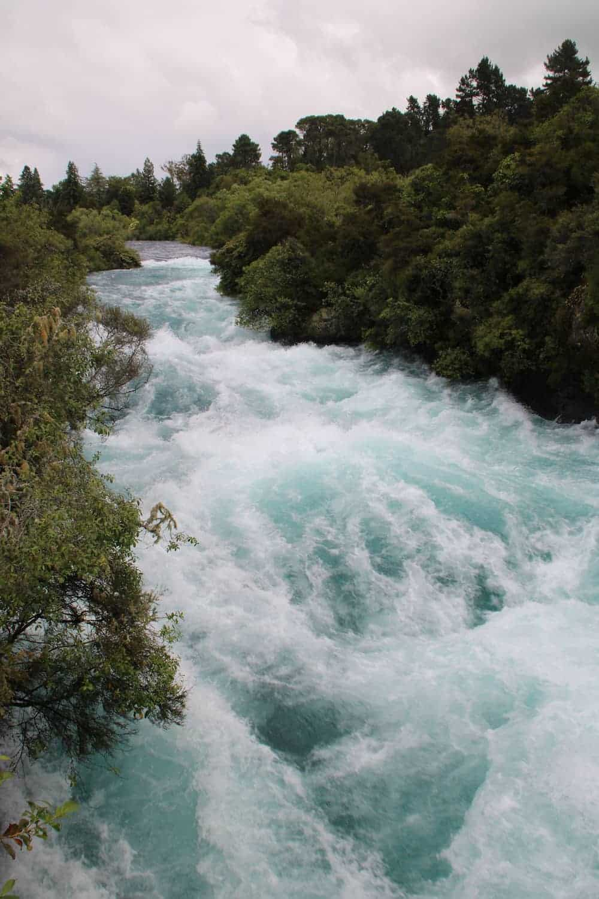
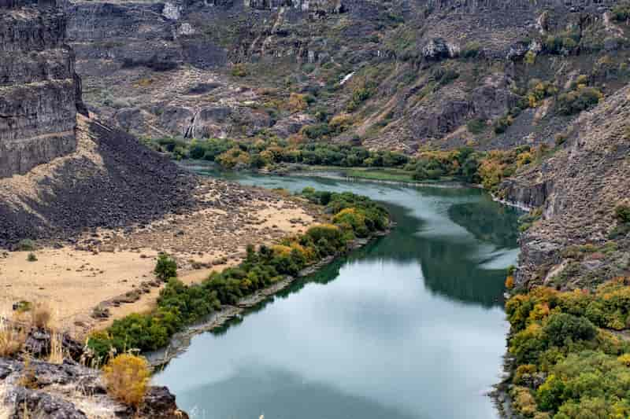

The Jurassic Run takes you on a wild whitewater adventure through untamed waters, where towering waves, raging rapids, and hidden dangers make every turn feel like a journey back to the age of dinosaurs. Paddle hard through churning currents and rocky passages as you navigate this prehistoric thrill ride. One wrong move, and you might just become lunch in the lost world of Jurassic!


Forest Friends is a scenic whitewater rafting adventure that winds through lush forests, towering trees, and peaceful wilderness. Dont let the friendly name fool you—playful rapids, splashing waves, and unexpected twists make this run an exciting ride from start to finish. Keep your eyes peeled for woodland creatures along the riverbanks as you paddle your way through natures wild playground!
High Tide is an exhilarating whitewater rafting run where powerful currents and rising waves deliver nonstop excitement. Ride the surging water through twisting channels and crashing rapids as the river builds in strength around every bend. Hold on tight, paddle hard, and prepare for a wild ride where the water is always in charge!


Lazy River is a relaxing rafting adventure perfect for those looking to slow down and enjoy the ride. Gently drifting currents carry you through peaceful waters surrounded by beautiful scenery and shady riverbanks. Sit back, soak up the sunshine, and let the river do the work—because sometimes the best adventure is taking it easy!
| Adventure Title | Days Needed | Experience Level | Estimated Cost |
|---|---|---|---|
| Jurassic Run | 4 days | Advanced | $75 a day. Call for discount details |
| Forest Friend | 3 days | Intermidate | $45 a day. Call for discount details |
| High Tide | 2 days | Professional | $350 a day. Call for discount details |
| Lazy River | 4-10 days | Beginner | $60 a day. Call for discount details |